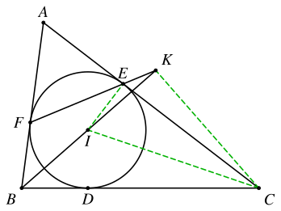
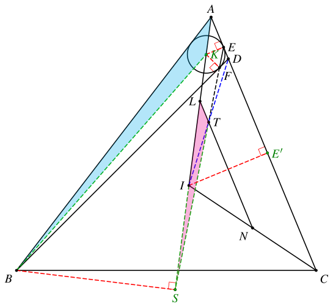
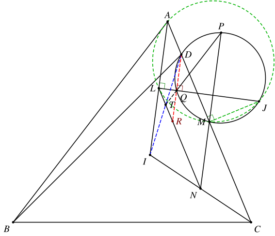

1. 题目
在 △ABC 中，I 为内心，L、M、N 分别是 AI、AC、CI 的中点。点 D 在线段 AM 上，满足 BC=BD，△ABD 的内切圆分别切 AD、BD 于点 E、F。J 为 △AIC 的外心，ω 为 △JMD 的外接圆，直线 MN 另交圆 ω 于点 P，JL 另交圆 ω 于点 Q。证明：PQ、LN、EF 三线共点。
2. 分析
要证明三线共点，一个很自然的思路是先确定两条直线的交点，再证明它也在第三条直线上。
这里面我们可以先考虑 EF 和 LN 的交点，因为 LN 是中位线，而 EF 是内切点连线，这两个都有比较好的性质。
3. 解答
3.1. 确定点 D 的位置
根据 BD=BC 的条件，我们可以求出 AD 的长度。
设 AB=c，BD=BC=a，CA=b，AD=d，我们对 △ABC 和 △ABD 应用余弦定理：
b2+c2−a2d2+c2−a2=2bccos∠BAC=2dccos∠BAC
因此 b、d 是方程 x2−2ccosA⋅x+c2−a2=0 的两个根，由韦达定理可知
b⋅d=c2−a2
3.2. 考虑直线 EF 的性质
关于内切点的连线，有一个很经典的题目：
设 △ABC 的内心为 I，内切圆和 BC、CA、AB 的交点依次为 D、E、F，直线 BI 和 EF 交于 K，则 C、I、E、K 共圆。

它的证明也很简单：
∠KEC∠KIC=∠AEF=90°−21∠A=180°−∠BIC=180°−(90°+21∠A)=90°−21∠A
因此 ∠KEC=∠KIC，于是 C、I、E、K 四点共圆。并且有 ∠CKI=∠CEI=90°，即圆心为 CI 中点。
3.3. 确定 T 点的位置
类似上面的题目，在本题中，我们可以考虑延长 EF 和 AI 交于 S。设 △ABD 的内心为 K，直线 EF 和 LN 的交点为 T，于是在图中可以找到相似：
⟹∠LST=∠KBF=∠ABK∠SLT=∠KAC=∠BAK}△LST∼△ABK

于是有
AKLT=ABLS
这里面 AB、AK 是已知的（可以用 a、b、c 表示出来），只需要算出 LS，就可以求出 LT，从而确定 T 点的位置。
由前面提到的题目可知 ∠BSK=90°，因此
LS=AS−AL=AB⋅cos∠BAS−21AI=c⋅cos21∠BAC−21AI
由于 AI 是可算的，因此 LS 也是可算的。
带入上面的式子去求 LT：
LT=LS⋅ABAK=(c⋅cos21∠BAC−21AI)⋅cAK=AK⋅cos21∠BAC−2c1AI⋅AK=AE−2c1⋅AI⋅AK
其中
AE=2c+d−a
因此我们只需要算出 AI⋅AK 即可，就不用分别算 AI 和 AK 了，能够减少一些计算量：
AI⋅AK=cos21∠BACAE′⋅cos21∠BACAE=21+cos∠BAC2b+c−a⋅2d+c−a=2(1+2bcb2+c2−a2)(b+c−a)(bc2−a2+c−a)=bc(b+c+a)(b+c−a)(b+c−a)⋅b(c−a)(c+a+b)=c⋅(c−a)
于是可以得到 LT 的长度
LT=2c+d−a−2c1⋅c⋅(c−a)=2d=21AD
恰好是 AD 的一半。也就是说，T、I、D 共线，且 T 点就是 ID 的中点。
3.4. 证明 T 在直线 PQ 上
接下来，只需要证明 T、P、Q 共线即可。
这里面容易看出来的一个条件是 PQ∥AB，简单倒角即可证明。
注意到 J 是 △AIC 的外心，因此 ∠AMJ=∠ALJ=90°，可以得到 A、L、M、J 共圆。于是
⟹∠P=∠J=∠IAC=∠BAIAI∥MN}PQ∥AB

接下来只需要证明 TP 或 TQ 也和 AB 平行即可。这里的关键是如何运用点 T 的条件。
我们连接 DQ 并延长交 LN 于点 R，则 ∠DQJ=∠DMJ=∠ALJ，因此 DQ∥AL。
又有 LR∥AD，可知四边形 ALRD 是平行四边形。
因此 LT=21AD=21LR，可知 T 是 LR 的中点。
又 ∠LQR=∠DQJ=∠DMJ=90°，因此斜边中线 TQ=21LR=LT。也就是说，△LTQ 是等腰三角形。
其中
∠TLQ=90°−∠ILN=90°−∠IAC=90°−21∠BAC
因此
∠LTQ=180°−2∠TLQ=180°−2(90°−21∠BAC)=∠BAC
注意到 LN∥AC，于是有 TQ∥AB。因此 T、P、Q 共线。
这样，EF、PQ、LN 交于点 T，命题得证。